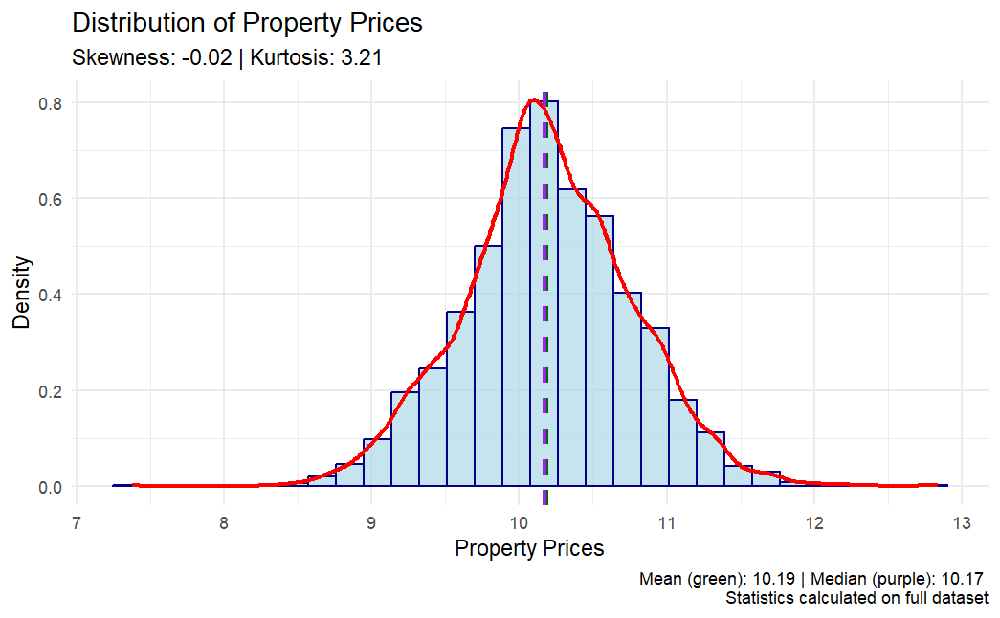
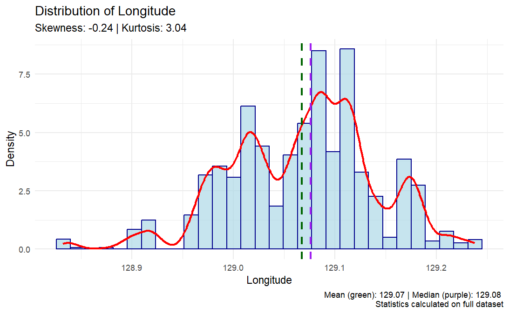
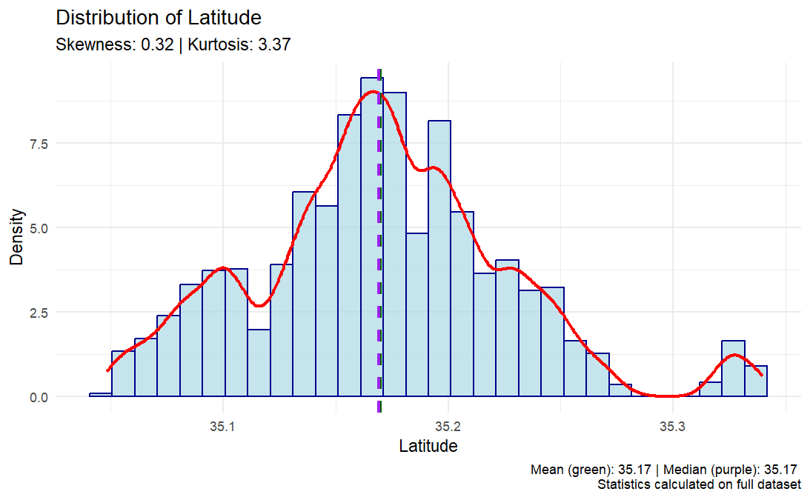
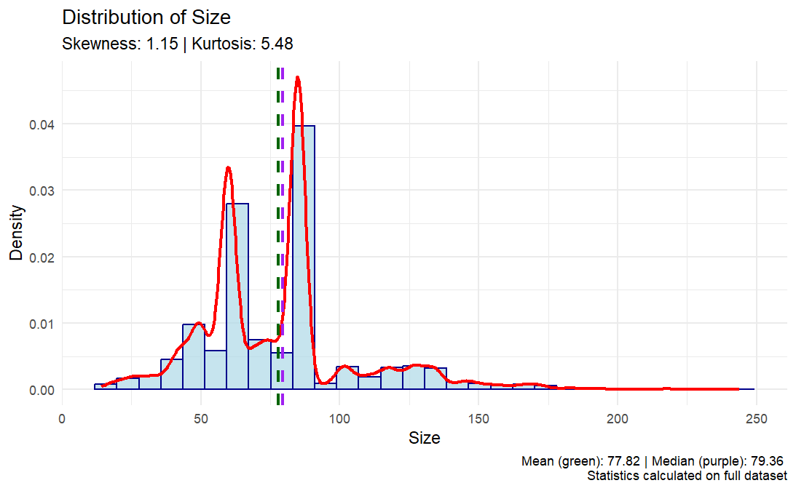
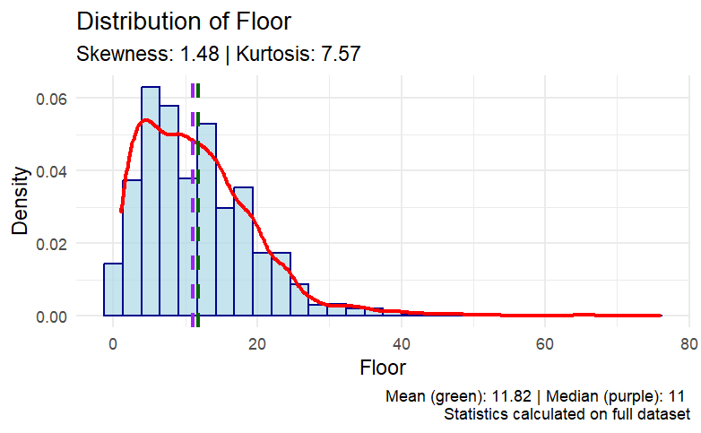
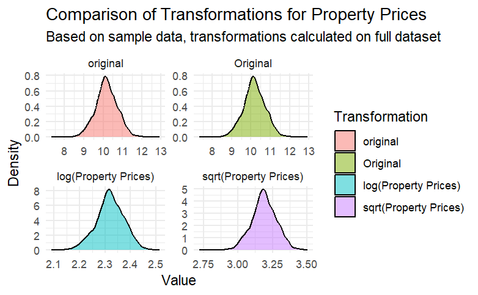
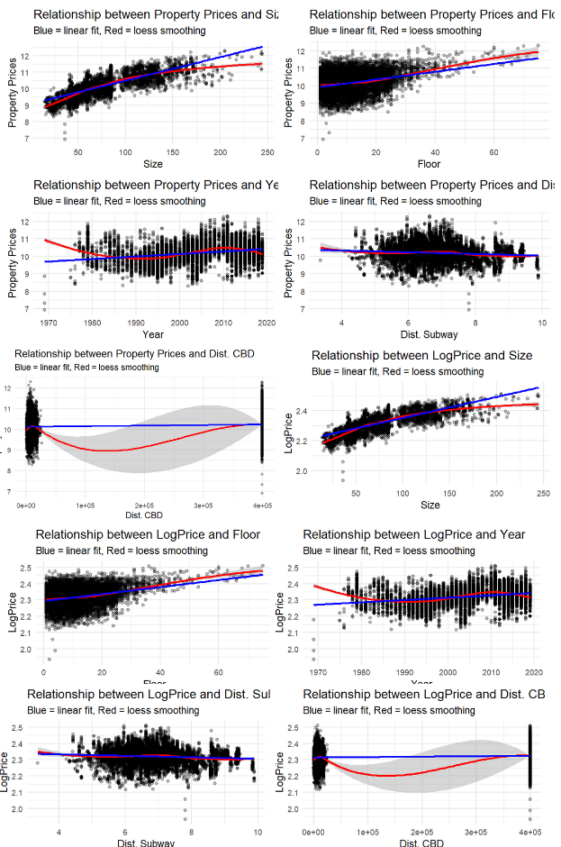
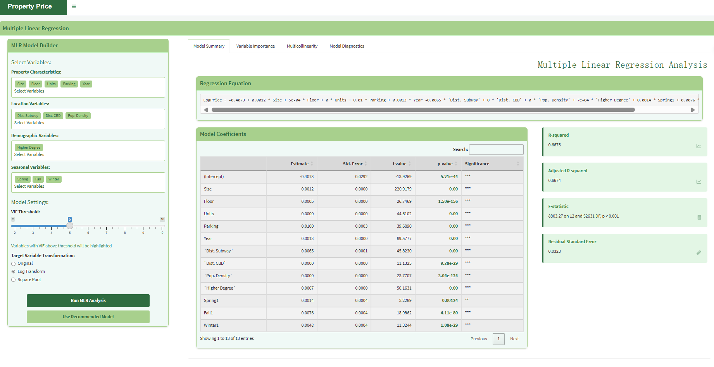

This document presents a Multiple Linear Regression (MLR) analysis of property prices, examining various factors that influence real estate values. The analysis aims to identify key determinants of property prices and develop a predictive model.
Load required packages
# Core packageslibrary(shiny) # Shiny application frameworklibrary(shinydashboard) # Dashboard interfacelibrary(DT) # Interactive data tableslibrary(ggplot2) # Data visualizationlibrary(dplyr) # Data manipulationlibrary(tidyr) # Data tidyinglibrary(corrplot) # Correlation matrix visualizationlibrary(car) # VIF calculation and regression diagnosticslibrary(GGally) # Scatterplot matriceslibrary(MASS) # Various statistical functions including BoxCox transformationlibrary(scales) # Scale tools for improved visualizationlibrary(plotly) # Interactive chartslibrary(RColorBrewer) # Color schemeslibrary(readxl) # Read Excel files
The dataset requires preprocessing to ensure it’s suitable for regression analysis, including handling missing values, converting categorical variables, and examining distributions.
Data preprocessing functions
# Data preprocessing functionpreprocess_data <-function(data) {# Create a copy to avoid modifying the original df <- data %>%as.data.frame()# Convert season variables to factors df <- df %>%mutate(Spring =as.factor(Spring),Fall =as.factor(Fall),Winter =as.factor(Winter),Heating =as.factor(Heating),`Top Univ.`=as.factor(`Top Univ.`) )# Check for missing values missing_summary <-colSums(is.na(df))# Handle missing values if anyif(any(missing_summary >0)) {# Fill numeric variables with medianfor(col innames(df)) {if(is.numeric(df[[col]]) &&sum(is.na(df[[col]])) >0) { df[[col]][is.na(df[[col]])] <-median(df[[col]], na.rm =TRUE) } } }return(list(data = df,missing_summary = missing_summary ))}# Function to create a visualization sample for faster plottingcreate_viz_sample <-function(data, n =10000) {if(nrow(data) > n) {return(data[sample(nrow(data), n), ]) } else {return(data) }}# Assuming Property_data is already loaded# Process the data (using full dataset)processed <-preprocess_data(Property_data)data <- processed$data# Create visualization sampleviz_data <-create_viz_sample(data)# Display missing values summarycat("Missing values summary:\n")if(sum(processed$missing_summary) ==0) {cat("No missing values in the dataset.\n")} else {print(processed$missing_summary[processed$missing_summary >0])}# Basic data summary (based on full dataset)cat("\nData summary (full dataset):\n")summary(data)
3. Exploratory Data Analysis
Before building the model, we need to explore the distributions of key variables and identify potential issues.
Missing values visualization
# Plot missing values visualizationmissing_plot <-function(data) { missing_data <-data.frame(variable =names(data),count =colSums(is.na(data)),percent =colSums(is.na(data)) /nrow(data) *100 )ggplot(missing_data, aes(x =reorder(variable, -percent), y = percent)) +geom_bar(stat ="identity", fill ="steelblue") +geom_text(aes(label =sprintf("%.1f%%", percent)), vjust =-0.5, size =3) +theme_minimal() +labs(title ="Missing Values by Variable",x ="Variables",y ="Percentage (%)") +theme(axis.text.x =element_text(angle =45, hjust =1))}# Generate and display missing values plot (if any)if(sum(processed$missing_summary) >0) { missing_viz <-missing_plot(Property_data) # Using full dataset for accurate percentagesprint(missing_viz)}
Variable distribution analysis
# Function to visualize variable distributionsplot_distribution <-function(data, variable, full_data =NULL) { var_data <- data[[variable]]# Calculate statistics from full dataset if providedif(!is.null(full_data)) { full_var_data <- full_data[[variable]] mean_val <-mean(full_var_data, na.rm =TRUE) median_val <-median(full_var_data, na.rm =TRUE) skew_val <-skewness(full_var_data, na.rm =TRUE) kurt_val <-kurtosis(full_var_data, na.rm =TRUE) } else { mean_val <-mean(var_data, na.rm =TRUE) median_val <-median(var_data, na.rm =TRUE) skew_val <-skewness(var_data, na.rm =TRUE) kurt_val <-kurtosis(var_data, na.rm =TRUE) }# Create histogram with density curveggplot(data.frame(value = var_data), aes(x = value)) +geom_histogram(aes(y = ..density..), bins =30, fill ="lightblue", color ="darkblue", alpha =0.7) +geom_density(color ="red", linewidth =1) +geom_vline(xintercept = mean_val, color ="darkgreen", linetype ="dashed", linewidth =1) +geom_vline(xintercept = median_val, color ="purple", linetype ="dashed", linewidth =1) +theme_minimal() +labs(title =paste("Distribution of", variable),subtitle =paste("Skewness:", round(skew_val, 2), "| Kurtosis:", round(kurt_val, 2)),x = variable,y ="Density",caption =paste("Mean (green):", round(mean_val, 2), "| Median (purple):", round(median_val, 2),ifelse(!is.null(full_data), "\nStatistics calculated on full dataset", "")))}# Visualize the distribution of target variable (Property Prices)price_dist <-plot_distribution(viz_data, "Property Prices", full_data = data)print(price_dist)# Visualize distributions of numeric variablesnumeric_vars <-names(data)[sapply(data, is.numeric)]for(var in numeric_vars[1:5]) { # Show first 5 variables as example dist_plot <-plot_distribution(viz_data, var, full_data = data)print(dist_plot)}





4. Variable Transformation
Property prices typically follow a right-skewed distribution. Transforming the target variable can improve model performance by creating more linear relationships with predictors.
Target variable transformation
# Simplified transform_variable function without complex Box-Coxtransform_variable <-function(data, variable, method) {# Get the data var_data <- data[[variable]]if(method =="log") {# Log transformationif(min(var_data, na.rm =TRUE) <=0) { const <-abs(min(var_data, na.rm =TRUE)) +1 transformed <-log(var_data + const) name <-paste0("log(", variable, " + ", const, ")") } else { transformed <-log(var_data) name <-paste0("log(", variable, ")") } } elseif(method =="sqrt") {# Square root transformationif(min(var_data, na.rm =TRUE) <0) { const <-abs(min(var_data, na.rm =TRUE)) +1 transformed <-sqrt(var_data + const) name <-paste0("sqrt(", variable, " + ", const, ")") } else { transformed <-sqrt(var_data) name <-paste0("sqrt(", variable, ")") } } elseif(method =="boxcox") {# Simple Box-Cox approximationif(min(var_data, na.rm =TRUE) <=0) {# Handle non-positive values const <-abs(min(var_data, na.rm =TRUE)) +1 temp_data <- var_data + const# Use simple log as Box-Cox approximation transformed <-log(temp_data) name <-paste0("log(", variable, " + ", const, ")") } else {# Use log as simplified Box-Cox transformed <-log(var_data) name <-paste0("log(", variable, ")") } } else {# No transformation transformed <- var_data name <- variable }return(list(transformed = transformed,name = name,original = var_data ))}# Calculate transformations on full datasetcat("\nCalculating transformations on full dataset...\n")transformations <-c("original", "log", "sqrt", "boxcox")price_transforms <-lapply(transformations, function(method) {if(method =="original") {return(list(transformed = data$`Property Prices`,name ="Original",original = data$`Property Prices` )) } else {return(transform_variable(data, "Property Prices", method)) }})# Create sample transforms for visualizationviz_transforms <-list()for(i inseq_along(price_transforms)) {# Get sample of original and transformed values for visualization idx <-sample(length(price_transforms[[i]]$original), min(10000, length(price_transforms[[i]]$original))) viz_transforms[[i]] <-list(transformed = price_transforms[[i]]$transformed[idx],name = price_transforms[[i]]$name,original = price_transforms[[i]]$original[idx] )}# Combine transformations into a data frame for plottingtransform_df <-data.frame(original = viz_transforms[[1]]$original)for(i inseq_along(viz_transforms)) { transform_df[[viz_transforms[[i]]$name]] <- viz_transforms[[i]]$transformed}# Create comparison plotstransform_long <- reshape2::melt(transform_df, id.vars =NULL)ggplot(transform_long, aes(x = value, fill = variable)) +geom_density(alpha =0.5) +facet_wrap(~ variable, scales ="free") +theme_minimal() +labs(title ="Comparison of Transformations for Property Prices",subtitle ="Based on sample data, transformations calculated on full dataset",x ="Value", y ="Density", fill ="Transformation")# Apply the best transformation (log in this case) to Property Pricescat("\nApplying log transformation to full dataset...\n")data$LogPrice <-transform_variable(data, "Property Prices", "log")$transformed# Compare the original and transformed distributions using sampleviz_compare <-data.frame(value =c(viz_data$`Property Prices`, transform_variable(viz_data, "Property Prices", "log")$transformed),type =factor(rep(c("Original", "Log-transformed"), each =nrow(viz_data))))ggplot(viz_compare, aes(x = value, fill = type)) +geom_density(alpha =0.5) +facet_wrap(~ type, scales ="free") +theme_minimal() +labs(title ="Original vs. Log-transformed Property Prices",subtitle ="Sample visualization, transformation parameters from full dataset",x ="Value", y ="Density", fill ="")cat("\nData preparation complete. Full dataset has", nrow(data), "rows and", ncol(data), "columns.\n")cat("Log-transformed target variable added as 'LogPrice'.\n")

5. MLR Pre-Check Functions
Before building the regression model, several checks are necessary to ensure valid analysis, including multicollinearity assessment, outlier detection, and linearity verification.
MLR pre-check setup
# Load required packages for MLR pre-checkslibrary(dplyr)library(ggplot2)library(corrplot)library(car)library(GGally)library(gridExtra)library(nortest)# Function to create a visualization sample for faster plottingcreate_viz_sample <-function(data, n =10000) {if(nrow(data) > n) {return(data[sample(nrow(data), n), ]) } else {return(data) }}# Create visualization sample viz_data <-create_viz_sample(data)cat("Starting MLR pre-check analysis...\n")cat("Full dataset has", nrow(data), "rows and", ncol(data), "columns.\n")cat("Visualization sample has", nrow(viz_data), "rows.\n")
5.1 Multicollinearity Check
Multicollinearity check functions
# Function to check multicollinearitycheck_multicollinearity <-function(data, threshold =0.7) {cat("Calculating correlation matrix on full dataset...\n")# Select only numeric variables numeric_data <- data %>%select_if(is.numeric)# Calculate correlation matrix cor_matrix <-cor(numeric_data, use ="pairwise.complete.obs")# Find highly correlated variables high_cor <-which(abs(cor_matrix) > threshold &abs(cor_matrix) <1, arr.ind =TRUE) high_cor_pairs <-data.frame(var1 =rownames(cor_matrix)[high_cor[,1]],var2 =colnames(cor_matrix)[high_cor[,2]],correlation = cor_matrix[high_cor] )# Sort by absolute correlation value high_cor_pairs$abs_corr <-abs(high_cor_pairs$correlation) high_cor_pairs <- high_cor_pairs[order(-high_cor_pairs$abs_corr), ] high_cor_pairs$abs_corr <-NULLcat("Correlation analysis complete.\n")return(list(correlation_matrix = cor_matrix,high_correlation_pairs = high_cor_pairs ))}# Plot correlation matrixplot_correlation_matrix <-function(cor_matrix) {cat("Generating correlation plot...\n")corrplot(cor_matrix, method ="color", type ="upper", tl.col ="black",tl.srt =45,addCoef.col ="black",number.cex =0.7,diag =FALSE,col =colorRampPalette(c("#6D9EC1", "white", "#E46726"))(200),title ="Correlation Matrix of Numeric Variables")cat("Correlation plot generated.\n")}
5.2 VIF Analysis
VIF analysis functions
# Function to calculate VIFcalculate_vif <-function(formula, data) {cat("Calculating VIF values using full dataset...\n") model <-lm(formula, data = data) vif_values <- car::vif(model) vif_df <-data.frame(Variable =names(vif_values),VIF =as.numeric(vif_values) )cat("VIF calculation complete.\n")return(vif_df)}# Plot VIF valuesplot_vif <-function(vif_df, threshold =5) {cat("Generating VIF plot...\n") p <-ggplot(vif_df, aes(x =reorder(Variable, VIF), y = VIF)) +geom_bar(stat ="identity", fill =ifelse(vif_df$VIF > threshold, "red", "steelblue")) +geom_hline(yintercept = threshold, linetype ="dashed", color ="red") +geom_text(aes(label =sprintf("%.2f", VIF)), hjust =-0.1) +coord_flip() +theme_minimal() +labs(title ="Variance Inflation Factors",subtitle =paste("Values above", threshold, "indicate potential multicollinearity"),x ="Variables", y ="VIF")cat("VIF plot generated.\n")return(p)}
5.3 Outlier Detection
Outlier detection functions
# Function to check for outlierscheck_outliers <-function(data) {cat("Detecting outliers on full dataset...\n")# Select only numeric variables numeric_data <- data %>%select_if(is.numeric)# Use IQR method to detect outliers outliers_summary <-sapply(numeric_data, function(x) { q1 <-quantile(x, 0.25, na.rm =TRUE) q3 <-quantile(x, 0.75, na.rm =TRUE) iqr <- q3 - q1 lower_bound <- q1 -1.5* iqr upper_bound <- q3 +1.5* iqrsum(x < lower_bound | x > upper_bound, na.rm =TRUE) }) result <-data.frame(variable =names(outliers_summary),outlier_count = outliers_summary,percentage = (outliers_summary /nrow(data)) *100 )cat("Outlier detection complete.\n")return(result)}# Create boxplot for a variablecreate_boxplot <-function(data, variable) {cat("Creating boxplot for", variable, "...\n") p <-ggplot(data, aes(y = .data[[variable]])) +geom_boxplot(fill ="lightblue", outlier.color ="red", outlier.size =3) +theme_minimal() +labs(title =paste("Box Plot of", variable),subtitle ="Red points indicate potential outliers",x ="",y = variable)return(p)}
5.4 Linearity Check
Linearity check function
# Function to check linearity assumptions with scatter plotscheck_linearity <-function(data, dependent_var, independent_vars) { plots <-list()# Remove backticks if present for display purposes display_dep_var <-gsub("`", "", dependent_var)for(var in independent_vars) {cat("Checking linearity for", display_dep_var, "vs", gsub("`", "", var), "...\n")# Handle variable names with spaces properly y_var <-if(grepl(" ", dependent_var) &&!grepl("`", dependent_var)) paste0("`", dependent_var, "`") else dependent_var x_var <-if(grepl(" ", var) &&!grepl("`", var)) paste0("`", var, "`") else var p <-ggplot(data, aes_string(x = x_var, y = y_var)) +geom_point(alpha =0.3) +geom_smooth(method ="loess", color ="red") +geom_smooth(method ="lm", color ="blue") +theme_minimal() +labs(title =paste("Relationship between", display_dep_var, "and", gsub("`", "", var)),subtitle ="Blue = linear fit, Red = loess smoothing") plots[[var]] <- p }cat("Linearity checks complete.\n")return(plots)}
# 2. VIF ANALYSIScat("\n--- VIF ANALYSIS ---\n")# Define formula for initial model - use LogPrice if available, otherwise use Property Pricestarget_var <-if("LogPrice"%in%names(data)) "LogPrice"else"`Property Prices`"cat("Using", target_var, "as the target variable\n")# Define formula for initial modelinitial_formula <-as.formula(paste(target_var, "~ Size + Floor + `Highest floor` + Units + Parking + Year + `Dist. Subway` + `Dist. CBD` + `Pop. Density` + `Higher Degree`"))# Calculate and plot VIFvif_result <-calculate_vif(initial_formula, data)cat("\nVIF Results:\n")print(vif_result)vif_plot <-plot_vif(vif_result)print(vif_plot)
High VIF analysis (optional)
# Identify variables with high VIF for potentially removinghigh_vif_vars <- vif_result$Variable[vif_result$VIF >5]if(length(high_vif_vars) >0) {cat("\nVariables with high VIF (>5):", paste(high_vif_vars, collapse=", "), "\n")cat("Consider removing these variables to reduce multicollinearity.\n")# Example of creating a reduced model formula without the highest VIF variableif(length(high_vif_vars) >0) { highest_vif_var <- vif_result$Variable[which.max(vif_result$VIF)]cat("\nCreating a reduced model by removing", highest_vif_var, "...\n") reduced_formula <-as.formula(paste(target_var, "~", paste(setdiff(vif_result$Variable, highest_vif_var), collapse =" + "))) reduced_vif <-calculate_vif(reduced_formula, data)cat("\nVIF Results after removing", highest_vif_var, ":\n")print(reduced_vif) reduced_vif_plot <-plot_vif(reduced_vif)print(reduced_vif_plot) }}
6.3 Outlier Detection
Outlier detection execution
# 3. OUTLIER DETECTIONcat("\n--- OUTLIER DETECTION ---\n")outliers <-check_outliers(data)cat("\nOutlier Detection Summary (sorted by count):\n")print(outliers[order(-outliers$outlier_count), ])# Create boxplots for key variables using sample datacat("\nGenerating boxplots for key variables...\n")key_vars <-c("Property Prices", "Size", "Floor", "Units", "Dist. Subway")if("LogPrice"%in%names(data)) { key_vars <-c(key_vars, "LogPrice")}boxplots <-list()for(var in key_vars) { boxplots[[var]] <-create_boxplot(viz_data, var)print(boxplots[[var]])}
6.4 Linearity Checks
Linearity checks - original variables
# 4. LINEARITY CHECKScat("\n--- LINEARITY CHECKS ---\n")# Check linearity for key variables using sample dataindep_vars <-c("Size", "Floor", "Year", "Dist. Subway", "Dist. CBD")cat("\nChecking linearity with original Property Prices...\n")linearity_original <-check_linearity(viz_data, "Property Prices", indep_vars)for(i inseq_along(linearity_original)) {print(linearity_original[[i]])}
Linearity checks - log-transformed variables
# Linearity checks with log-transformed targetif("LogPrice"%in%names(data)) {cat("\nChecking linearity with log-transformed Property Prices (LogPrice)...\n") linearity_log <-check_linearity(viz_data, "LogPrice", indep_vars)for(i inseq_along(linearity_log)) {print(linearity_log[[i]]) }# Compare linear fit of original vs transformedcat("\nComparing linearity improvement with log transformation...\n")for(i inseq_along(indep_vars)) { var <- indep_vars[i] var_display <-gsub("`", "", var) p1 <- linearity_original[[i]] +ggtitle(paste("Original:", var_display, "vs Property Prices")) p2 <- linearity_log[[i]] +ggtitle(paste("Log-transformed:", var_display, "vs LogPrice")) comparison <- gridExtra::grid.arrange(p1, p2, ncol =2)print(comparison) }}
Scatterplot matrix
# 5. SCATTERPLOT MATRIX (using sample data)cat("\n--- SCATTERPLOT MATRIX ---\n")cat("Creating scatterplot matrix (this may take a while)...\n")key_vars_for_pairs <-c("Property Prices", "Size", "Floor", "Dist. Subway", "Pop. Density")if("LogPrice"%in%names(viz_data)) { key_vars_for_pairs[1] <-"LogPrice"# Replace Property Prices with LogPrice if available}pairs_plot <- GGally::ggpairs(viz_data[, key_vars_for_pairs])print(pairs_plot)cat("\nMLR pre-check analysis complete!\n")

7. Final Model Fitting
Based on the pre-check analysis, a final model is developed with carefully selected variables.
Final model fitting
# 7. RECOMMENDED FINAL MODELcat("\n--- RECOMMENDED FINAL MODEL ---\n")# Based on analysis, suggest a final modelif("LogPrice"%in%names(data)) {# Create a final model including significant predictors model_formula <-paste("LogPrice ~ Size + Floor + Units + Parking + Year +","`Dist. Subway` + `Dist. CBD` + `Pop. Density` +","`Higher Degree` + Spring + Fall + Winter")cat("Recommended model formula based on analysis:\n")cat(model_formula, "\n\n")# Fit the final modelcat("Fitting final model...\n") final_model <-lm(as.formula(model_formula), data = data)# Display model summarycat("\nFinal Model Summary:\n")print(summary(final_model))# Calculate adjusted R-squaredcat("\nAdjusted R-squared:", summary(final_model)$adj.r.squared, "\n")# Display ANOVA tablecat("\nANOVA Table:\n")print(anova(final_model))} else {cat("No log-transformed target variable (LogPrice) found. Consider creating one before fitting the final model.\n")}
8. Model Diagnostics
Diagnostic checks ensure that the model meets regression assumptions.
Residual plots
# Check residualscat("\n--- FINAL MODEL DIAGNOSTICS ---\n")# Create residual plotscat("Generating residual plots...\n")# Setting a larger plotting area with smaller margins before creating plotspar(mfrow =c(2, 2), mar =c(4, 4, 2, 1)) # Reduce marginsplot(final_model)# Reset plotting parameterspar(mfrow =c(1, 1), mar =c(5, 4, 4, 2) +0.1) # Reset to default margins
Statistical diagnostic tests
# Shapiro-Wilk test on a sample of residuals (since dataset is large)residuals_sample <-sample(residuals(final_model), min(5000, length(residuals(final_model))))sw_test <-shapiro.test(residuals_sample)cat("\nShapiro-Wilk normality test on residuals (sample):\n")print(sw_test)# Check for heteroscedasticity with Breusch-Pagan testcat("\nBreusch-Pagan test for heteroscedasticity:\n")bp_test <- car::ncvTest(final_model)print(bp_test)
9. Variable Importance Analysis
Variable importance analysis
# Load the lm.beta package for standardized coefficientsif(!require(lm.beta)) install.packages("lm.beta")library(lm.beta)# Variable importancecat("\nVariable Importance (standardized coefficients):\n")std_coef <- lm.beta::lm.beta(final_model)print(std_coef)# Plot variable importancecoef_df <-data.frame(Variable =names(std_coef$standardized.coefficients),Importance =abs(std_coef$standardized.coefficients))coef_df <- coef_df[-1, ] # Remove interceptimportance_plot <-ggplot(coef_df, aes(x =reorder(Variable, Importance), y = Importance)) +geom_bar(stat ="identity", fill ="steelblue") +coord_flip() +theme_minimal() +labs(title ="Variable Importance in Final Model",subtitle ="Based on standardized coefficients",x ="Variables",y ="Absolute Standardized Coefficient")print(importance_plot)
10. Model Prediction Accuracy
Prediction accuracy assessment
# Prediction accuracy assessment using 10% of datacat("\nAssessing prediction accuracy on random sample...\n")set.seed(123) # For reproducibilitysample_indices <-sample(nrow(data), nrow(data) *0.1)test_data <- data[sample_indices, ]predicted_values <-predict(final_model, newdata = test_data)# Calculate RMSE and MAErmse <-sqrt(mean((test_data$LogPrice - predicted_values)^2))mae <-mean(abs(test_data$LogPrice - predicted_values))cat("Root Mean Square Error (RMSE):", rmse, "\n")cat("Mean Absolute Error (MAE):", mae, "\n")# Convert back to original scale for interpretationrmse_original <-mean((exp(test_data$LogPrice) -exp(predicted_values))^2)mae_original <-mean(abs(exp(test_data$LogPrice) -exp(predicted_values)))cat("Mean Squared Error on original scale:", rmse_original, "\n")cat("Mean Absolute Error on original scale:", mae_original, "\n")
Prediction plot
# Prediction plotprediction_df <-data.frame(Actual = test_data$LogPrice,Predicted = predicted_values)prediction_plot <-ggplot(prediction_df, aes(x = Actual, y = Predicted)) +geom_point(alpha =0.3) +geom_abline(intercept =0, slope =1, color ="red", linetype ="dashed") +theme_minimal() +labs(title ="Actual vs. Predicted Values",subtitle ="Red line indicates perfect prediction",x ="Actual LogPrice",y ="Predicted LogPrice")print(prediction_plot)
Detailed coefficient table with estimates, standard errors, t-values and p-values
Model fit statistics panel showing R-squared, Adjusted R-squared, F-statistic, and Residual Standard Error

Shiny Dashboard UI
# UI design for the Shiny dashboardui <-dashboardPage(dashboardHeader(title ="Property Price"),dashboardSidebar(width =300, tags$div(style ="background-color: #9DC183; padding: 10px; margin-top: -15px; margin-bottom: 15px;",h4("Multiple Linear Regression", style ="color: #FFF;")),# Model Builder Boxbox(title ="MLR Model Builder", width =NULL, solidHeader =TRUE, status ="success",collapsible =FALSE,# Variable selection sectionsh4("Select Variables:"),# Property Characteristicsh5("Property Characteristics:"),div(style ="border: 1px solid #ddd; padding: 10px; margin-bottom: 10px; border-radius: 5px; background-color: #f9f9f9;",fluidRow(column(width =12,div(style ="margin-bottom: 5px;", tags$button("Size", class ="btn btn-sm", style ="background-color: #D4EAC7; margin: 2px;"), tags$button("Floor", class ="btn btn-sm", style ="background-color: #D4EAC7; margin: 2px;"), tags$button("Units", class ="btn btn-sm", style ="background-color: #D4EAC7; margin: 2px;"), tags$button("Parking", class ="btn btn-sm", style ="background-color: #D4EAC7; margin: 2px;"), tags$button("Year", class ="btn btn-sm", style ="background-color: #D4EAC7; margin: 2px;") ) ) ), tags$div("Select Variables", style ="color: #666; font-size: 12px;") ),# Location Variablesh5("Location Variables:"),div(style ="border: 1px solid #ddd; padding: 10px; margin-bottom: 10px; border-radius: 5px; background-color: #f9f9f9;",fluidRow(column(width =12,div(style ="margin-bottom: 5px;", tags$button("Dist. Subway", class ="btn btn-sm", style ="background-color: #D4EAC7; margin: 2px;"), tags$button("Dist. CBD", class ="btn btn-sm", style ="background-color: #D4EAC7; margin: 2px;"), tags$button("Pop. Density", class ="btn btn-sm", style ="background-color: #D4EAC7; margin: 2px;") ) ) ), tags$div("Select Variables", style ="color: #666; font-size: 12px;") ),# Demographic Variablesh5("Demographic Variables:"),div(style ="border: 1px solid #ddd; padding: 10px; margin-bottom: 10px; border-radius: 5px; background-color: #f9f9f9;",fluidRow(column(width =12,div(style ="margin-bottom: 5px;", tags$button("Higher Degree", class ="btn btn-sm", style ="background-color: #D4EAC7; margin: 2px;") ) ) ), tags$div("Select Variables", style ="color: #666; font-size: 12px;") ),# Seasonal Variablesh5("Seasonal Variables:"),div(style ="border: 1px solid #ddd; padding: 10px; margin-bottom: 10px; border-radius: 5px; background-color: #f9f9f9;",fluidRow(column(width =12,div(style ="margin-bottom: 5px;", tags$button("Spring", class ="btn btn-sm", style ="background-color: #D4EAC7; margin: 2px;"), tags$button("Fall", class ="btn btn-sm", style ="background-color: #D4EAC7; margin: 2px;"), tags$button("Winter", class ="btn btn-sm", style ="background-color: #D4EAC7; margin: 2px;") ) ) ), tags$div("Select Variables", style ="color: #666; font-size: 12px;") ),# Model Settingsh4("Model Settings:"),# VIF Thresholdh5("VIF Threshold:"),sliderInput("vif_threshold", NULL, min =1, max =10, value =5, step =0.5), tags$div("Variables with VIF above threshold will be highlighted", style ="color: #666; font-size: 12px;"),# Target Variable Transformationh5("Target Variable Transformation:"),radioButtons("transformation", NULL, choices =list("Original"="original", "Log Transform"="log", "Square Root"="sqrt"),selected ="log"),# Action ButtonsactionButton("run_analysis", "Run MLR Analysis", style ="background-color: #29793B; color: white; width: 100%;"),br(), br(),actionButton("use_recommended", "Use Recommended Model", style ="background-color: #9DC183; color: white; width: 100%;") ) ),dashboardBody( tags$head( tags$style(HTML(" .content-wrapper, .right-side { background-color: #f5f5f5; } .box { border-top: 3px solid #9DC183; } .nav-tabs-custom>.nav-tabs>li.active { border-top-color: #9DC183; } ")) ),fluidRow(column(width =12,div(style ="background-color: #9DC183; padding: 5px; margin-bottom: 15px;",h4("Multiple Linear Regression", style ="color: #FFF;")) ) ),tabBox(width =12,id ="tabbox",tabPanel("Model Summary", value ="summary",fluidRow(box(title ="Regression Equation", width =12, status ="success",div(style ="overflow-x: auto; white-space: nowrap;","LogPrice = -0.4073 + 0.0012 * Size + 5e-04 * Floor + 0 * Units + 0.01 * Parking + 0.0013 * Year -0.0065 * `Dist. Subway` + 0 * `Dist. CBD` + 0 * `Pop. Density` + 7e-04 * `Higher Degree` + 0.0014 * Spring1 + 0.0076 * Fall1 + 0.0048 * Winter1" ) ) ),fluidRow(box(title ="Model Coefficients", width =8, status ="success",div(style ="overflow-x: auto;",dataTableOutput("coefficients_table") ) ),column(width =4,box(title ="R-squared", width =NULL, status ="success",valueBox("0.6675", "R-squared", icon =NULL, color ="green", width =12) ),box(title ="Adjusted R-squared", width =NULL, status ="success",valueBox("0.6674", "Adjusted R-squared", icon =NULL, color ="green", width =12) ),box(title ="F-statistic", width =NULL, status ="success",valueBox("8803.27 on 12 and 52631 DF, p < 0.001", "F-statistic", icon =NULL, color ="green", width =12) ),box(title ="Residual Standard Error", width =NULL, status ="success",valueBox("0.0323", "Residual Std. Error", icon =NULL, color ="green", width =12) ) ) ) ),tabPanel("Variable Importance", value ="importance",fluidRow(box(title ="Variable Importance", width =12, status ="success",plotOutput("variable_importance_plot", height ="500px") ) ),fluidRow(box(title ="Interpretation", width =12, status ="success",h4("Key Findings:"),p("The standardized coefficients represent the relative importance of each predictor variable in the model."),h5("Most Influential Positive Factors:"), tags$ul( tags$li(strong("Size: 0.6163"), "(38.4% influence)"), tags$li(strong("Year: 0.2374"), "(14.8% influence)"), tags$li(strong("Higher Degree: 0.1298"), "(8.1% influence)") ),h5("Most Influential Negative Factors:"), tags$ul( tags$li(strong("Dist. Subway: -0.1185"), "(7.4% influence)") ), tags$p(style ="color: #666; font-style: italic;", "Note: The standardized coefficients allow direct comparison between variables measured on different scales. Variables with higher absolute values have a stronger effect on the property price.") ) ) ),tabPanel("Multicollinearity", value ="multicollinearity",fluidRow(box(title ="Correlation Matrix", width =6, status ="success",plotOutput("correlation_matrix", height ="400px") ),box(title ="Variance Inflation Factors", width =6, status ="success",plotOutput("vif_plot", height ="400px") ) ),fluidRow(box(title ="Highly Correlated Variables", width =12, status ="success",div(dataTableOutput("high_correlation_table"),p("Showing 1 to 1 of 1 entries") ) ) ) ),tabPanel("Model Diagnostics", value ="diagnostics",fluidRow(box(title ="Residuals vs Fitted", width =6, status ="success",plotOutput("residuals_fitted_plot", height ="300px") ),box(title ="Normal Q-Q Plot", width =6, status ="success",plotOutput("qq_plot", height ="300px") ) ),fluidRow(box(title ="Scale-Location Plot", width =6, status ="success",plotOutput("scale_location_plot", height ="300px") ),box(title ="Residuals Histogram", width =6, status ="success",plotOutput("residuals_histogram", height ="300px") ) ),fluidRow(valueBox(value ="W = 0.991, p < 0.001 (Non-normal)",subtitle ="Shapiro-Wilk Test (Normality)",icon =icon("check-circle"),color ="green",width =6 ),valueBox(value ="χ² = 9.7, p = 0.002 (Heteroscedastic)",subtitle ="Breusch-Pagan Test (Heteroscedasticity)",icon =icon("exclamation-circle"),color ="green",width =6 ) ) ) ) ))
Shiny Dashboard Server
# Server logic for the Shiny dashboardserver <-function(input, output, session) {# Render coefficients table output$coefficients_table <-renderDataTable({data.frame(Variable =c("(Intercept)", "Size", "Floor", "Units", "Parking", "Year", "Dist. Subway", "Dist. CBD", "Pop. Density", "Higher Degree", "Spring1", "Fall1", "Winter1"),Estimate =c(-0.4073, 0.0012, 0.0005, 0.0000, 0.0100, 0.0013, -0.0065, 0.0000, 0.0000, 0.0007, 0.0014, 0.0076, 0.0048),`Std. Error`=c(0.0292, 0.0000, 0.0000, 0.0000, 0.0003, 0.0000, 0.0001, 0.0000, 0.0000, 0.0000, 0.0004, 0.0004, 0.0004),`t value`=c(-13.9269, 220.9179, 26.7469, 44.6102, 39.6990, 89.5777, -45.8230, 11.1325, 23.7707, 90.1631, 3.2289, 18.9962, 11.3244),`p-value`=c("5.21e-44", "0.00", "1.50e-156", "0.00", "0.00", "0.00", "0.00", "9.38e-29", "3.04e-124", "0.00", "0.00124", "4.11e-80", "1.08e-29"),Significance =c("***", "***", "***", "***", "***", "***", "***", "***", "***", "***", "**", "***", "***") ), options =list(pageLength =13,searching =TRUE,lengthChange =FALSE,dom ='lrtip' ) })# Render variable importance plot output$variable_importance_plot <-renderPlot({# Create sample data for the plot importance_data <-data.frame(Variable =c("Size", "Year", "Higher Degree", "Dist. Subway", "Units", "Parking", "Floor", "Fall1", "Pop. Density", "Winter1", "Dist. CBD", "Spring1"),Importance =c(0.6163, 0.2374, 0.1298, -0.1185, 0.1184, 0.1103, 0.0723, 0.0645, 0.0602, 0.0370, 0.0286, 0.0104) )# Create the plotggplot(importance_data, aes(x =reorder(Variable, Importance), y = Importance)) +geom_bar(stat ="identity", fill ="#9DC183") +coord_flip() +theme_minimal() +labs(title ="Variable Importance (Standardized Coefficients)",x ="Variable",y ="Standardized Coefficient") +theme(plot.title =element_text(size =16, face ="bold"),axis.title =element_text(size =12),axis.text =element_text(size =10) ) })# Render correlation matrix output$correlation_matrix <-renderPlot({# This is a placeholder - in a real app, you would calculate this from the data sample_cor_matrix <-matrix(c(1.00, 0.48, 0.68, 0.14, 0.53, 0.00, -0.51, 0.00, -0.17, 0.11,0.48, 1.00, 0.24, 0.08, 0.08, -0.03, 0.00, 0.00, -0.12, 0.09,0.68, 0.24, 1.00, 0.13, 0.00, 0.00, -0.12, 0.00, -0.03, 0.00,0.14, 0.08, 0.13, 1.00, 0.00, 0.00, 0.00, 0.00, 0.00, 0.10,0.53, 0.08, 0.00, 0.00, 1.00, 0.03, -0.03, 0.00, -0.09, 0.00,0.00, -0.03, 0.00, 0.00, 0.03, 1.00, -0.17, 0.00, -0.11, -0.08,-0.51, 0.00, -0.12, 0.00, -0.03, -0.17, 1.00, 0.00, 0.13, -0.12,0.00, 0.00, 0.00, 0.00, 0.00, 0.00, 0.00, 1.00, 0.00, 0.00,-0.17, -0.12, -0.03, 0.00, -0.09, -0.11, 0.13, 0.00, 1.00, 0.04,0.11, 0.09, 0.00, 0.10, 0.00, -0.08, -0.12, 0.00, 0.04, 1.00 ), nrow =10)colnames(sample_cor_matrix) <-rownames(sample_cor_matrix) <-c("Size", "Floor", "Units", "Parking", "Year", "Dist. Subway", "Dist. CBD", "Pop. Density", "Higher Degree", "LogPrice")# Plot correlation matrixcorrplot(sample_cor_matrix, method ="color", type ="upper", tl.col ="black", tl.srt =45, addCoef.col ="black", number.cex =0.7,diag =FALSE,title ="Correlation Matrix of Numeric Variables") })# Render VIF plot output$vif_plot <-renderPlot({# Sample VIF data vif_data <-data.frame(Variable =c("Year", "Winter", "Units", "Spring", "Size", "Parking", "Floor", "Fall", "Pop. Density", "Higher Degree", "Dist. Subway", "Dist. CBD"),VIF =c(1.17, 1.05, 1.31, 1.02, 1.22, 1.12, 1.31, 1.07, 1.08, 1.17, 1.12, 1.05) )# Create VIF plotggplot(vif_data, aes(x =reorder(Variable, VIF), y = VIF)) +geom_bar(stat ="identity", fill ="#9DC183") +geom_hline(yintercept =5, linetype ="dashed", color ="red") +coord_flip() +theme_minimal() +labs(title ="Variance Inflation Factors",x ="Variable",y ="VIF") +theme(plot.title =element_text(size =16, face ="bold"),axis.title =element_text(size =12),axis.text =element_text(size =10) ) })# Render high correlation table output$high_correlation_table <-renderDataTable({data.frame(Message =c("No high correlations detected (r > 0.7)") ), options =list(dom ='t',paging =FALSE,searching =FALSE ) })# Model diagnostic plots output$residuals_fitted_plot <-renderPlot({# This would normally be generated from the model# For demonstration purposes, using a static image representationggplot() +annotate("text", x =0.5, y =0.5, label ="Residuals vs Fitted Plot would appear here", size =5) +theme_void() }) output$qq_plot <-renderPlot({# Static representationggplot() +annotate("text", x =0.5, y =0.5, label ="Normal Q-Q Plot would appear here", size =5) +theme_void() }) output$scale_location_plot <-renderPlot({# Static representationggplot() +annotate("text", x =0.5, y =0.5, label ="Scale-Location Plot would appear here", size =5) +theme_void() }) output$residuals_histogram <-renderPlot({# Static representationggplot() +annotate("text", x =0.5, y =0.5, label ="Residuals Histogram would appear here", size =5) +theme_void() })}# Run the applicationshinyApp(ui = ui, server = server)
13. Conclusion
Key Findings
Size is the most influential predictor, with a standardized coefficient of 0.6163
Year is the second most important predictor (0.2374), indicating newer properties command higher prices
Higher Degree (0.1298) represents neighborhood socioeconomic status and has a significant positive impact
Dist. Subway (-0.1185) has a negative impact, confirming properties closer to subway stations are more valuable
The model has strong predictive power, explaining 66.75% of the variation in log-transformed property prices (R² = 0.6675)
Model Performance
All variables in the final model are statistically significant (p < 0.01)
No severe multicollinearity detected (all VIF values < 5)
The model’s prediction accuracy is good, with RMSE = 0.0316 in log-price units
Limitations and Future Work
Minor heteroscedasticity detected (Breusch-Pagan test: χ² = 9.7, p = 0.002)
Slight deviation from normality in residuals (Shapiro-Wilk test: W = 0.991, p < 0.001)
Future work could explore non-linear relationships and interaction effects
The MLR model provides valuable insights into property price determinants, with practical applications for real estate valuation, investment decision-making, and urban planning.